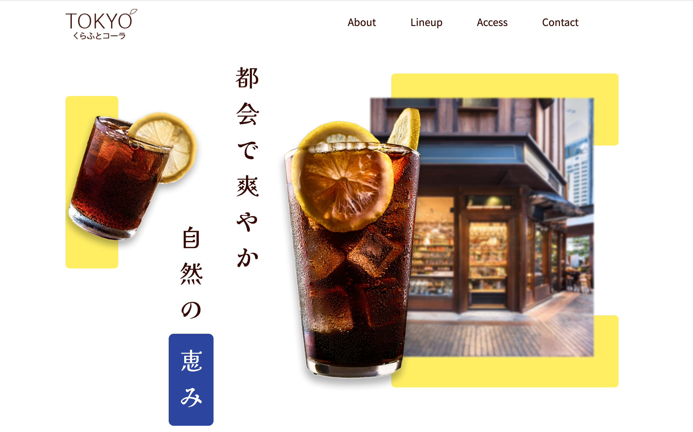

Web Design Projects
-

多摩みなみ歯科クリニック
Design / Coding
Branding / Solo project
Creation time / 2 Weeks
-

SYOWAチョコレート
Coding
Branding / Team project
Creation time / 2 Weeks
-

TOKYOくらふとコーラ
Design / Coding
Branding / Solo project
Creation time / 2 Weeks
-
Color Mix
Next.js project
Solo project
Creation time / 3 Weeks
-

Portfolio
Design / Coding
Solo project
Creation time / 1year